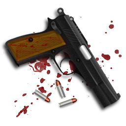
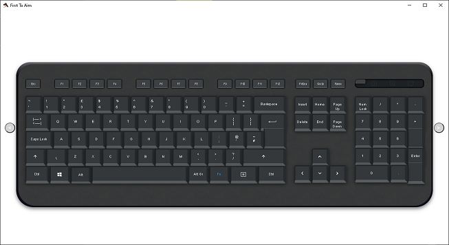
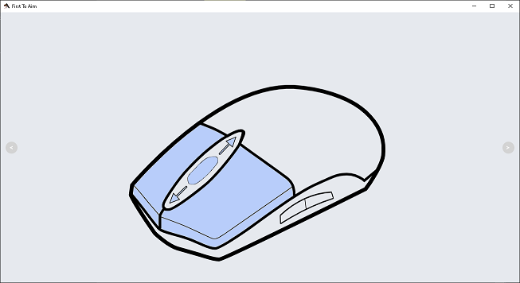
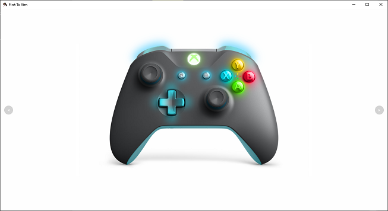

FTA
FirstToAim
Scripting Inputs to Outputs
With some easy codes helped with autocompletion, assignate well optimized and well transformed input values of Physical Keyboard, Mouse, Microphone Speech, Xbox Controller, Joycon left, Joycon right, Wiimote, and/or Nunchuck, to output values of Virtual Keyboard, Mouse, and/or Xbox Controller. It corresponds globally to 9 different ways for playing : Keyboard and Mouse as Xbox Controller, Microphone Speech as Keyboard, Xbox Controller as Keyboard and Mouse, Joycon and Mouse, Joycons, Joycon as steering wheel, Wiimote as steering wheel, Joycon and Wiimote, Nunchuck and Wiimote. With free code example scripts here, it's possible to acquire fastly all knowledges for adapt your favorite way to play in all your games. All game genres are playable, binbok Joypad for Switch or official Joycons and August LP310 Remote used normaly for Power Point presentation for Top Down Shooters ! Enjoy to be able to use it in all games you want to play with 0 latency, best accuracy, fast/large moving, action bindings of a Controller, better fine center aiming... Play competitive using Joycon and Wiimote or Keyboard and Mouse as Xbox Controller shaming PC master race players. Win money saling your encrypted scripts to other users you choose to share it. Connect your Joycons and/or Wiimote pressing synchronisation button(s) of Joycons and/or Wiimote and then a simple button. Have easy to change different assignation for different games.
Have fun in your games with easy and fast codes. Have fun with responsive and clean inputs to outputs. Have fun with 15 years of researches on all ways for having fun with Motion Controllers. The following pictures are illustrating the four component pages of the program. The first page is the main tool for coding the script, running it and manage it. The other pages are for testing your script. Let's see...




Considerations About the Program
The scripts need coding in C# language, but don't be scary to write it, there's autocompletion of all variables and you find here all script examples and code pieces explainations, and also all values are already good managed inside the program. The Keyboard key Add, +, is processing or unprocessing Mouse cursor for hooking the Mouse to be used in First Personn Shooters as Xbox Controller. It also get the resolution of your screen for recenter cursor if it changed. The D-Pad Up buttons of Joycons are recentering respectively gyroscope axis of each Joycon. Each time you run the script, Joycons gyroscopes, Joycons accelerometers, Wiimote accelerometers, Joycons sticks, and/or Nunchuck stick are calibrated. Even if your Joycon(s) and/or Wiimote are already connected before starting the program, you shall connect it with the button for it, but you don't need to push button(s) of synchronisation before. It doesn't integrate 2 players mode for a reason of performance, and for it Nintendo consoles are far more enjoyable. But you can ask me custom programs, and scripts to use with this program, by the what.
Code Example Scripts
It's simple as that, inputs to outputs. Here the directionnal cruce of Wiimote send WASD Keyboard keys. It's very simple and stupid example, but you will find far better ways for moving your character or racing car in your games.
SendA = mWSButtonStateLeft ;
SendS = mWSButtonStateDown ;
SendD = mWSButtonStateRight ;
It's just easy as that for sale your encrypted script. Each time you save your script, 2 files are created, 1 is your script codes, 1 is your script sales. Don't use this line code if you want all users can play with your script. You can add one to several users.
There's some inner usefull variables to have the control like for switching of configurations, or for automatically set an output later after another one.
getstate = false;
/* Initialize pollcount */
pollcount = 0;
There's some variables to adapt the outputs for your prefered rendering, like recenter Wiimote IR for the center of your screen in function of sensor bar at top or bottom of your screen. Also like adapt speed of mouse move sent lowering its sensitivity with poll time.
centery = -200;
/* Set the sleep time to wait between each poll (must be set between 1 and 50 ms) */
sleeptime = 20;
Here's some codes to set mouse cursor position from gyroscope axis of right Joycon.
MouseDesktopX = width / 2f RightGyroX * width / 2f / 1024f;
/* Set mouse cursor axis Y from Joycon right gyro axis Y */
MouseDesktopY = height / 2f + RightGyroY * height / 2f / 1024f;
There's an integrate function to rescale values. It's usefull for remove deadzone or for change easily sensistivity like in the following example.
MouseMoveX = Scale( irx, -1024, 1024, -127, 127);
/* Scale and set values of mouse move axis Y from Wiimote IR axis Y */
MouseMoveY = Scale( iry, -1024, 1024, -127, 127);
Here the codes to assignate Joycon right stick axis to Xbox Controller right stick axis when Joycon right is used alone.
if (stickRight[1] < -0.25f) rightstickx = -32767;
if (stickRight[1] <= 0.25f & stickRight[1] >= -0.25f) rightstickx = 0;
And the codes to assignate Nunchuck stick axis to Xbox Controller stick axis, almost similar.
if (mWSNunchuckStateRawJoystickX < -33f) rightstickx = -32767;
if (mWSNunchuckStateRawJoystickX <= 33f & mWSNunchuckStateRawJoystickX >= -33f) rightstickx = 0;
The codes to set Xbox Controller left stick axis from Mouse axis is as following if the deadzone of Xbox Controller left stick in game options is set to 0.
leftstickx = MouseHookX / 1024f * 32767f;
/* Set Xbox Controller left stick axis Y from Mouse axis Y */
leftsticky = -MouseHookY / 1024f * 32767f;
Here's the sample for Microphone Speech.
SpeechToText = new string[] { "Load", "Blow", "Fire", "Aiming", "Welcome", "Hello" };
/* Send Keyboard key R if you say load */
SendR = TextFromSpeech == "Load" ? true : false;
There is another Wiimote irmode asking to be more accurate than the default Wiimote irmode more easy to use.
irmode = 1;
/* More complexity aiming accuracy irmode */
irmode = 2;
Available Scripts
- keyboard-mouse-warzone
- joycon-left-mouse-warzone
- joycon-left-wiimote-fortnite
- joycon-left-wiimote-fortnite-version-keyboard-mouse
- joycon-left-wiimote-warzone
- nunchuck-wiimote-warzone
- wiimote-hot-wheels
- joycon-right-hot-wheels
- joycons-inside
- joycons-gods-trigger
- joycons-airmouse-gods-trigger
- and more...
Usefull Information
Sales:
Page components updated, need to be encrypted with TextCryptor, to be loaded in FTA.
Each time FTA is updated, replace file in the zip fta.zip in installer-FTA, zip Installer-FTA without auth.txt, update Installer-FTA.zip on fastspring.
Create encrypted scripts, add it to fastspring, add allowed users who bought it, update it to fastspring, send to users who bought it.
Each time a user buy, seen in fastspring or gmail, create auth.txt file with GetHashedChecksum with the name of the user and checksum of the file hashed, add to firestore database secureconnection the name of the user as new document in users collection, and create empty string field named uniqueid, and then send the file to the user, if the user redeem, delete the document with the name of the user, https://console.cloud.google.com/firestore/data/users/mic113b?project=secureconnection.
Supports:
Prefer a PC with bluetooth integrate because it's more powerfull, and so normally there isn't any weird latency.
Press Win+R and type joy.cpl, and then press enter to test controller.
The form scripts use setting files needing to set decimal instead of comma for number separator in regional advanced options under control panel.
When you can choose to lower deadzone of gamepad from game options, set it to lowest values, it's better for vertical/horizontal flawless view control, but not for walk/run control.
You can switch between two configurations with Wiimote Home and Down Buttons, but switch is enable only when Wiimote is connected alone or with one Joycon, and with driver type as controller only.
To enable configuration change and input sendings, press Joycon Right Button DPAD_DOWN and Joycon Right Button HOME, or Joycon Left Button DPAD_DOWN and Joycon Left Button CAPTURE, or Wiimote Button Home and Wiimote Button Two.
The keyboardmouse settings for Fortnite are as following:
move = ZSQD
jump = Space bar
sprint = Left shift
crouch = A
fire = Left mouse button
target = Right mouse button
reload = R
use = F
harvesting tool = V
weapon slot 1 = &
weapon slot 2 = é
weapon slot 3 = "
weapon slot 4 = '
weapon slot 5 = (
wall = U
Floor = C
stairs = Y
roof = X
trap = P
place building = Left mouse button
change building material = Right mouse button
building edit = E
toggle map = Tab
driver push = Space bar
driver exit = A
The keyboardmouse settings for Call of Duty are as following:
move = ZSQD
jump = Space bar
sprint = Left shift
fire = Left mouse button
target = Right mouse button
reload = R
use = F
cut = V
toggle score / toggle map = Tab
special equipement = A
switch auto fire / shot per shot = Y
armor = U
tactical = T
deadly = G
lie down = Left Alt
crouch = C
switch weapon = X
marker = Left Ctrl
streaks = &, é, ", ', (
The xbox360controller settings for Fortnite use build speciality (not classic) mappings under controller game options.
The xbox360controller settings for Call of Duty use default mappings under controller game options.
For playing 2 players using Joycons, if game is considering gamepads as third and fourth controllers, it's not playable, leave the game, like it's for Golazo.
Entering the game mode of call of duty is required to enable gamepad.
The forms scripts with WiiJoyXS can bind outputs from inputs known as:
controller, or whatever for hid type
sendinput, kmevent, or interception for driver type
mWSButtonStateLR for Wiimote Left or Right
mWSButtonStateMU for Wiimote Minus or Up
mWSButtonStatePU for Wiimote Plus or Up
mWSButtonStateHFront for Wiimote Home or to Front
mWSLeftButtonTC for Wiimote Two or Joycon Left Capture
LeftButtonSMA for Joycon Left SL, SR, Minus or Acceleration
RightButtonSPA for Joycon Right SL, SR, Plus or Acceleration
mWSButtonStateA
mWSButtonStateB
mWSButtonStateMinus
mWSButtonStateHome
mWSButtonStatePlus
mWSButtonStateOne
mWSButtonStateTwo
mWSButtonStateUp
mWSButtonStateDown
mWSButtonStateLeft
mWSButtonStateRight
mWSButtonStateFront
LeftButtonSHOULDER_1
LeftButtonSHOULDER_2
LeftButtonSR
LeftButtonSL
LeftButtonDPAD_DOWN
LeftButtonDPAD_RIGHT
LeftButtonDPAD_UP
LeftButtonDPAD_LEFT
LeftButtonMINUS
LeftButtonCAPTURE
LeftButtonSTICK
LeftButtonACC
LeftButtonStickRight
LeftButtonStickLeft
LeftButtonStickUp
LeftButtonStickDown
RightButtonSHOULDER_1
RightButtonSHOULDER_2
RightButtonSR
RightButtonSL
RightButtonDPAD_DOWN
RightButtonDPAD_RIGHT
RightButtonDPAD_UP
RightButtonDPAD_LEFT
RightButtonPLUS
RightButtonHOME
RightButtonSTICK
mWSRightButtonTH
RightButtonACC
RightButtonStickRight
RightButtonStickLeft
RightButtonStickUp
RightButtonStickDown
mWSNunchuckStateRollingLeft
mWSNunchuckStateRollingRight
mWSNunchuckStateRawValuesY
mWSNunchuckStateC
mWSNunchuckStateZ
mWSNunchuckStateStickRight
mWSNunchuckStateStickLeft
mWSNunchuckStateStickUp
mWSNunchuckStateStickDown
LeftRollLeft
LeftRollRight
RightRollLeft
RightRollRight
irx
iry
accx
accy
leftgyrox
leftgyroy
rightgyrox
rightgyroy
leftaccx
leftaccy
rightaccx
rightaccy
stickx
sticky
rightstickx
rightsticky
leftstickx
leftsticky
none